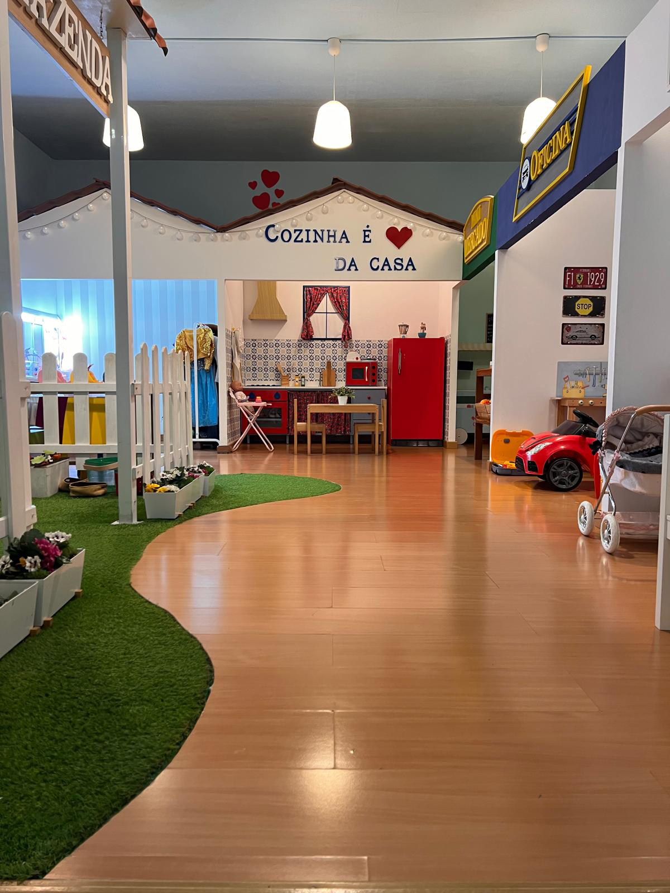
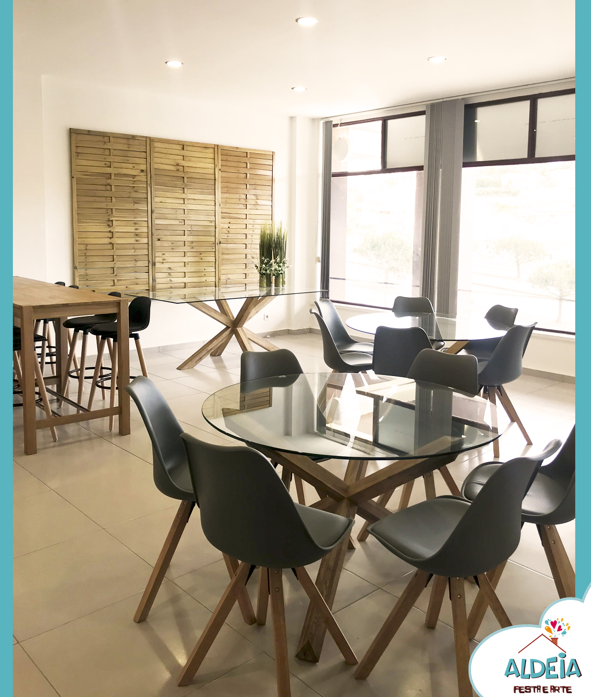

Um lugar à medida da imaginação
Bem-vindos à Aldeia.
Uma festa infantil em Coimbra, num espaço cheio de pequenos cenários para brincar, inventar e descobrir.

Brincar é descobrir
Pequenos mundos, grandes histórias.
A cozinha, o mini mercado e a oficina convidam a experimentar o faz de conta. Há espaço para criar histórias, partilhar a brincadeira e celebrar um dia especial.
-
Cozinha e mercado Um cenário para inventar receitas, compras e conversas.
-
Oficina de brincar Um cantinho para experimentar e dar asas à imaginação.
-
Zona de convívio Mesas e lugares para estar junto durante a celebração.

Um olhar pela Aldeia
Cada cantinho tem uma história.